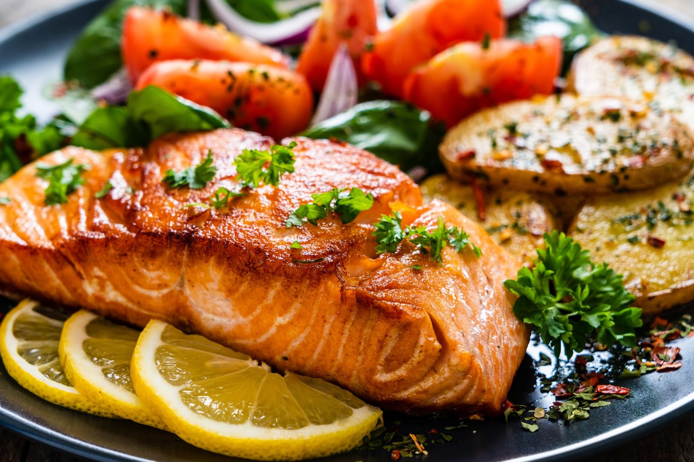

This is one of my favorite dinners ever. A nice cooked salmon with some spiced sweet potatoes and cauliflower.
It's perfect for those days where you're craving something healthy but tasty. It's also perfect if you want to avoid having to clean many things afterwards, since you'll only need two oven trays!
For two people: